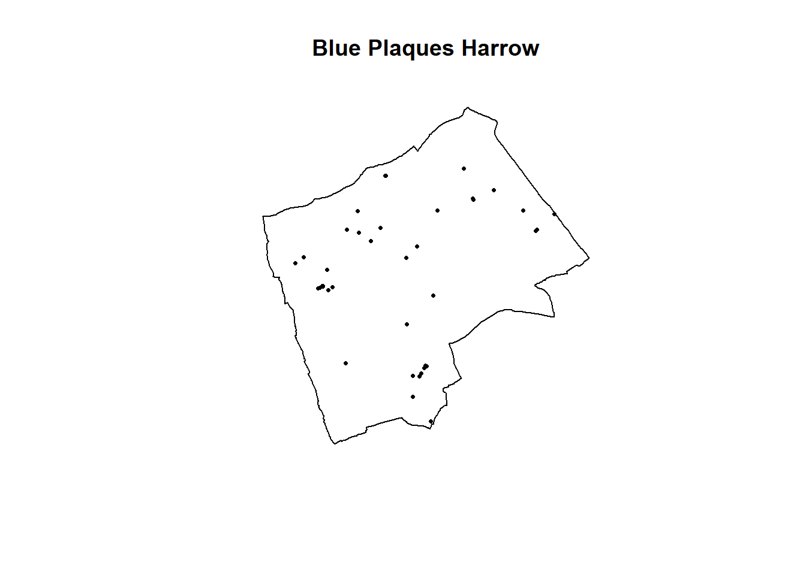
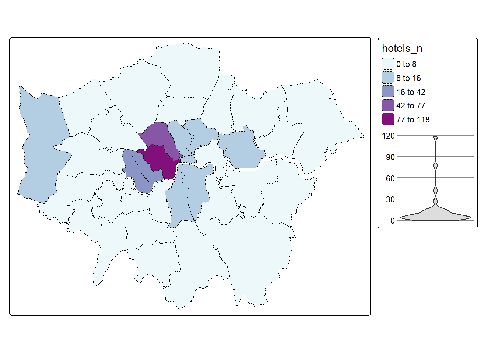

Chapter 3 Point pattern
For point pattern analysis we need a point pattern object…within an observation window
#now set a window as the borough boundary
window <- as.owin(LondonWards)
plot(window)#create a sp object
PharmacysubSP<- Pharmacysub %>%
as(., 'Spatial')
#create a ppp object
PharmacysubSP.ppp <- ppp(x=PharmacysubSP@coords[,1],
y=PharmacysubSP@coords[,2],
window=window)
PharmacysubSP.ppp %>%
plot(.,pch=16,cex=0.5,
main="Pharmacies in London")
3.1 Quadrat analysis
#First plot the points
plot(PharmacysubSP.ppp,
pch=16,
cex=0.5,
main="Pharmacies")
#now count the points in that fall in a 20 x 20
#must be run all together otherwise there is a plot issue
PharmacysubSP.ppp %>%
quadratcount(.,nx = 20, ny = 20)%>%
plot(., add=T, col="red")
#run the quadrat count
Qcount <- PharmacysubSP.ppp %>%
quadratcount(.,nx = 20, ny = 20) %>%
as.data.frame() %>%
dplyr::count(Var1=Freq)%>%
dplyr::rename(Freqquadratcount=n)Next we need to calculate the probabilities…
sums <- Qcount %>%
#calculate the total blue plaques (Var * Freq)
mutate(total = Var1 * Freqquadratcount) %>%
# then the sums
dplyr::summarise(across(everything(), sum))%>%
dplyr::select(-Var1)
lambda<- Qcount%>%
#calculate lambda - sum of freq count / sum of total plaques
mutate(total = Var1 * Freqquadratcount)%>%
dplyr::summarise(across(everything(), sum)) %>%
mutate(lambda=total/Freqquadratcount) %>%
dplyr::select(lambda)%>%
pull(lambda)Next is the expected values with the Poisson formula
QCountTable <- Qcount %>%
#Probability of number of plaques in quadrant using the formula
mutate(Pr=((lambda^Var1)*exp(-lambda))/factorial(Var1))%>%
#now calculate the expected counts based on our total number of plaques
#and save them to the table
mutate(Expected= (round(Pr * sums$Freqquadratcount, 0)))Plot them
QCountTable_long <- QCountTable %>%
pivot_longer(c("Freqquadratcount", "Expected"),
names_to="countvs_expected",
values_to="value")
ggplot(QCountTable_long, aes(Var1, value)) +
geom_line(aes(colour = countvs_expected ))
Check for association between two categorical variables
teststats <- quadrat.test(PharmacysubSP.ppp, nx = 20, ny = 20)Chi square with a p value < 0.05 therefore some clustering…but from the plot, this was expected
3.2 Ripley K
K <- PharmacysubSP.ppp %>%
Kest(., correction="border") %>%
plot()
This was sort of expected too due to our previous analysis - suggesting that there is clustering throughout the points.
3.3 DBSCAN
We need to identify the best value for the min points and distance….try increasing the value of k in kNNdistplot you will notice as you increase it the knee becomes less obvious.
If we have it too low we have a massive cluster
If we have it too high we have a small single cluster
I started with an eps of 1600 and a minpts of 20..however…the large eps means that the city centre has a massive cluster…this isn’t exactly what i wanted to pull out. Instead i want to identify local clusters of pharmacies so try reducing the eps to 500 and the minpts to 5
OPTICS will let us remove the eps parameter but running every possible value, however, minpts is always meant to be domain knowledge - see https://stats.stackexchange.com/questions/88872/a-routine-to-choose-eps-and-minpts-for-dbscan
Depending on your points it might be possible to filter the values you aren’t interested in - this isn’t the case here, but for example stop and search data or flytipping could be filtered (well, depepdning on the extra data within the columns)
#first extract the points from the spatial points data frame
Pharmacysub_coords <- Pharmacysub %>%
st_coordinates(.)%>%
as.data.frame()
Pharmacysub_coords%>%
dbscan::kNNdistplot(.,k=20)
#now run the dbscan analysis
db <- Pharmacysub_coords %>%
fpc::dbscan(.,eps = 500, MinPts = 5)
#now plot the results
plot(db, Pharmacysub_coords, main = "DBSCAN Output", frame = F)
plot(LondonWards$geometry, add=T)
Pharmacysub_coords<- Pharmacysub_coords %>%
mutate(dbcluster=db$cluster)Pharmacysub_coordsgt0 <- Pharmacysub_coords %>%
filter(dbcluster>0)
dbplot <- ggplot(data=LondonWards)+
geom_sf()+
geom_point(data=Pharmacysub_coordsgt0,
aes(X,Y, colour=dbcluster, fill=dbcluster))
#add the points in
dbplot + theme_bw() + coord_sf()
Now, this identifies where we have clustering based on our criteria but it doesn’t show where we have similar densities of pharmacies.